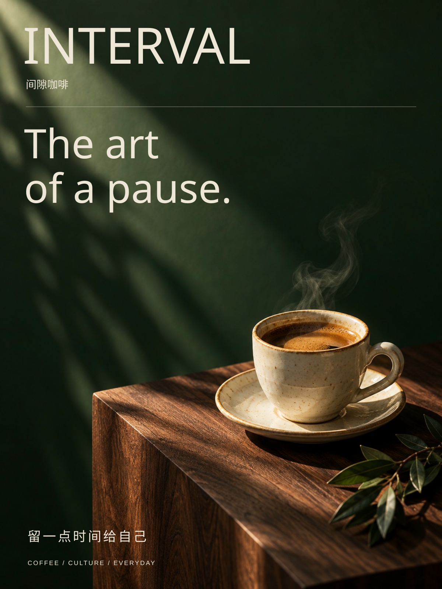

01 / 餐饮品牌视觉 / 2026
间隙咖啡
用一杯咖啡的停顿，建立安静、温暖的品牌语气。
项目性质
虚构品牌概念练习
设计应用
主海报 / 门店活动传播
创作方式
AI 辅助概念初稿

设计任务
面向独立咖啡馆午后时段的活动传播。让标题先传达情绪，再由时间与活动名称补充行动信息。
版式与视觉
深绿与奶油色形成稳定对比。杯子由简洁矢量形状构成，视觉重心落在页面下半部，为大标题留出完整空间。
配色
#243c32#f1e9d9#55382b源文件与创作说明
图形由本次 AI 辅助制作，SVG 保留矢量结构与文字。未使用真实客户标志、外部照片或未核实的业务数据。尚未补充申请人的手稿及真实修改记录。
下载 SVG 源文件 ↗
此案例目前展示主视觉方向。多尺寸适配、可画原生文字编辑和完整模板检查尚未完成，不应作为已经验收的成套模板。